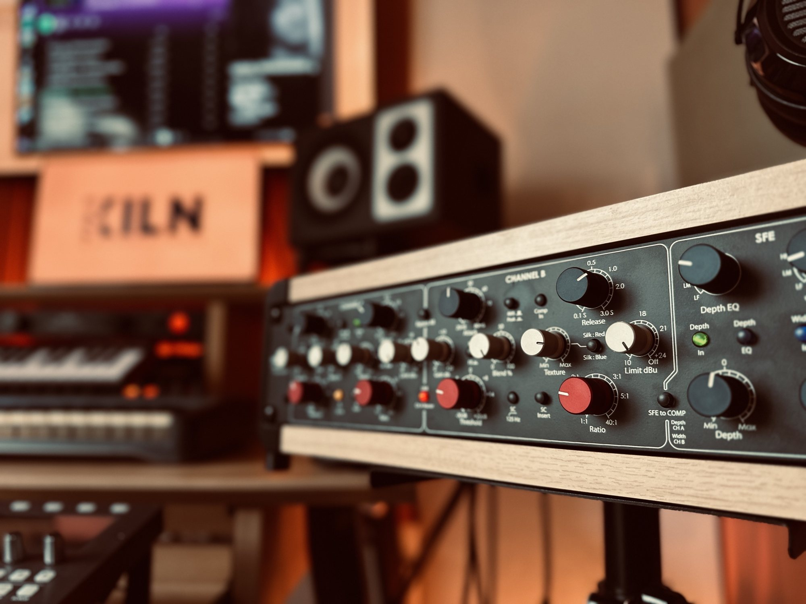

Stereo mix
From your multitracks to a finished, balanced mix with the depth and impact the song needs.
- Revisions included
- Instrumental and a cappella versions
Using A Hybrid Approach With State Of The Art Gear From NEVE, NEUMANN And BAREFOOT With A Focus On Showcasing The Emotion In Your Music, But With A Modern Signature.
Artists who've recorded, mixed and mastered their music at Kiln.
Clips from recent releases. Where you see the switch, flip between the rough mix and the finished master while it plays.

A hybrid analogue and digital room in Cheshire, built for mixing, mastering and intimate recording sessions.
Every project starts with a short call or message thread, so I know what you're going for before a fader moves.
From your multitracks to a finished, balanced mix with the depth and impact the song needs.
Final tonal balance, loudness and consistency across a single, EP or album, ready for streaming and physical release.
Recording, production, mixing and mastering under one roof, from first idea to finished release.
The studio is set up for small recording sessions: vocals, acoustic instruments and stripped-back arrangements.